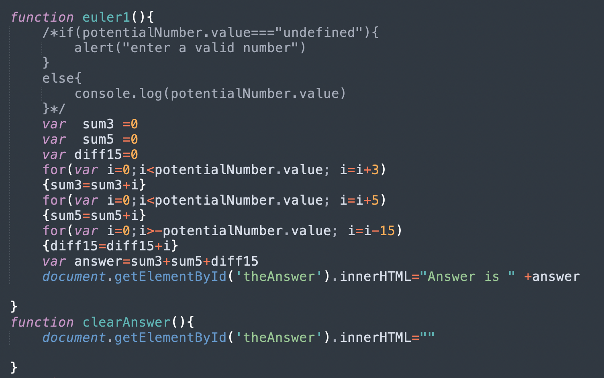
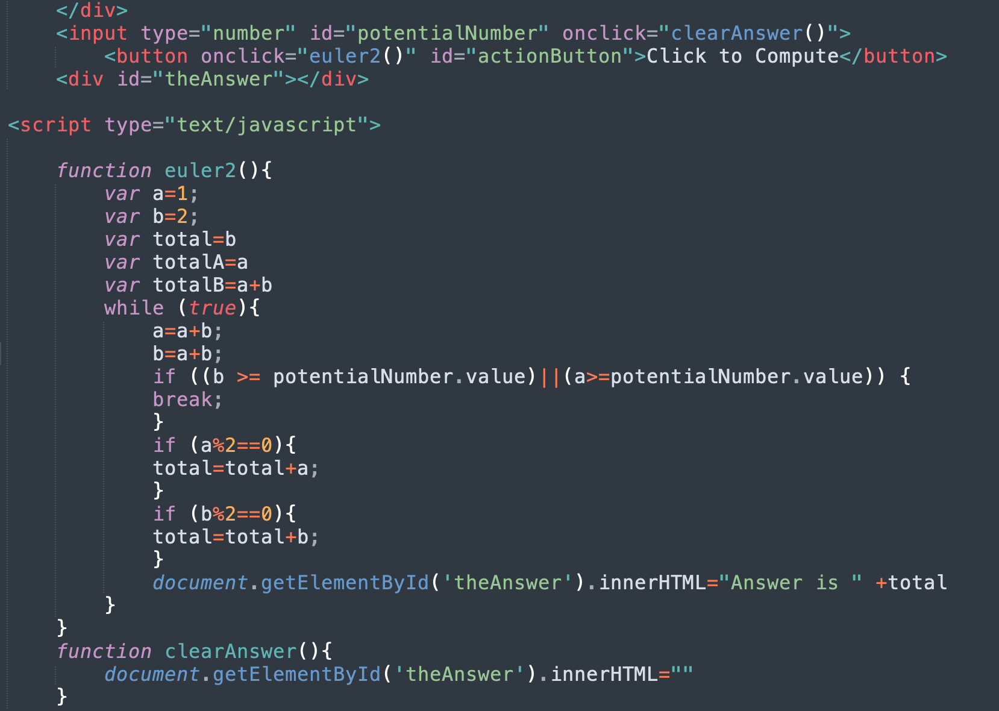

my final project!
by Simon Smith
These are the euler Projects. Originally, I coded them to just solve the problem from the Archive. But then, I amped it up...
 
So why did i highlight this project...
Thanks!!!